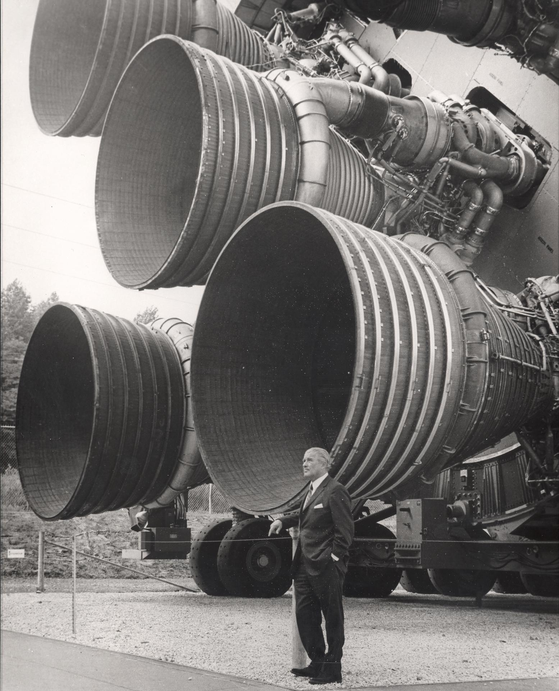

The phenomenon that has impeded the progress of the aviation, defense, and space industries
The F-1 engine was a leap in rocket engines through chamber size and thrust. It greatly exceeded NASA’s previous H-1 engine. It produced 1.5 million pounds of thrust, which is nearly 8 times the thrust of the H-1 engine. Five of them launched the Saturn V 38 miles high. The engines together consumed 15 tons of propellant per second. The F-1, initially, had to become a simple model because it was too large; any advanced rocket sized up to match the dimensions would just become too complex for engineers to resolve. They were given a short time span: the end of the decade. Engineers suspected that as engines increased in size, thermoacoustic instability would worsen.

Rocketdyne’s engineers performed tests with three different injectors. However, they all had combustion instability. The consequence came from pressure oscillations which, instead of decaying, grew into a destructive rhythm that was fed by the periodic combustion of fuel and the oscillation fed back to the flame, shaking the air-fuel mixture. Once instability got into the early model of the F-1, nothing could stop it until testers shut down the entire engine. It was thought that the new designs of the F-1 engine would have it under control, until, in June 1962, thermoacoustic instability led to the total loss of an F-1 engine. While engineers were trying to find a fix to this detrimental phenomenon, two more F-1 engines were lost in tests.
Damaged / destroyed combustion chamber.
Lead: Laurent (2020) thesis, Fig. 1.6. The right panel is a NASA chamber destroyed during early Apollo development. Original source still to be traced before use.
Four components create this phenomenon: a resonator which enables acoustic oscillation, damping which sets the bar the heat release must pass to grow, unsteady heat release which couples to the sound, and time delay in the flame’s response to sound.
The simulations simulate what researchers use to safely and easily observe thermoacoustic instability compared to the F-1 engine which risked explosion: a Rijke tube. It is composed of a vertical pipe with openings at the top and bottom with a heated gauze inside that heats the air, which rises and pulls more air up through the tube, and a sensor in the middle meant to measure pressure.
This is the Rijke tube without a heated gauze. Give the gas a pulse and watch it ring as damping eventually makes it dissipate.
Watch how the acoustic wave always dies. It needs another source of energy to keep it going.
You now supply the energy needed to keep the acoustic wave alive. Press to give pulses of heat and try to build the tone up.
Watch how if you press it in rhythm with the acoustic wave it builds, otherwise it flattens.
where p′ is the pressure fluctuation and q′ the heat-release fluctuation.
The gauze stays lit continuously this time. You control the delay in the gauze’s response to the sound now. In the Rijke tube, the sound oscillates the air and heat transfer off the hot wire depends on the speed of the air, but there is a thin layer of hot air surrounding the wire which takes time to settle into the new temperature profile that causes the heat to match what the air speed was a moment ago. The sound oscillates air speed and the heat oscillates with it but is delayed.
The time delay parameter in this simulation is a model parameter, but in a real system what controls delay is thermal inertia at the gauze. In a rocket, time delay comes from the fuel getting disturbed by the pressure wave and mixing instead of a boundary layer, but they both do the same job.
OBSERVATION PLACEHOLDER [intended: offset between traces widens/narrows as delay changes]
The gain n sets how strongly the gauze responds; τ is the delay.
This is the full loop. The gauze adds energy to the oscillations, the sound oscillates the air speed and causes the heat to oscillate with it by a delay. The delay is fixed. This is when the system becomes a self-sustaining feedback loop.
Try to set the gauze temperature and position it across the tube height and past a threshold the oscillations grow into a sustained tone or die away. Changing the length of the tube can also flip it, while also changing its natural frequency and period.
(kπ)²uₖ is the resonator from Demo 1. ζ is the damping that made it fade. βuₖ(t−τ) is the delayed gauze coupling from Demos 2 and 3. ξuₖ² is the saturation that stops the tone growing forever.
All the demos and the interactives are just 4 pieces of physics.
It is apparent that a real rocket has many more components than this, such as an inlet and an outlet, many acoustic modes at once, and the actual chemistry of burning. However, none of them are absolutely necessary to create thermoacoustic instability so they are not included in this page.
For the F-1 engine, the resonator was the combustion chamber, the turbulent flame acted as the unsteady heat source, the propellant travel and mixing were the time delay, and the chamber walls and nozzle were where the energy escaped, but they both leaked very little acoustic energy.
In the rocket, converting heat to sound was very inefficient, but there was so little damping that the little amount of sound produced by the engine stayed and built up to a destructive amplitude of pressure oscillations.
The fix engineers ultimately implemented altered the first mechanism of thermoacoustic instability: resonance. They did this by separating the chamber using baffles which affected the resonance the flame was coupling to.
You can see how the baffles changing geometry of the engine affect the instability by changing the tube length in demo 4; it changes the natural frequency which makes the fixed delay land somewhere else in the cycle, causing the delay to form or kill oscillations.
The first three demos are predictable. You do an action, such as pulsing the gauze, and when you stop, it stops. Then when the loop closes in demo four, the output becomes the input, and there is a threshold: below it disturbances die out, above it they grow. The threshold does not appear until all four mechanisms are connected.
This is what a complex system means: an emergent property that cannot be predicted by analyzing its parts.
The rocket was much larger than the Rijke tube and had a different heat source, different cause of delay, and different geometry, yet they both had the same behavior since they had all four mechanisms intact.
Three measured pressure traces: combustion noise, intermittency, full instability.
Journal figures are copyrighted: redraw from our own simulation output rather than reproduce.